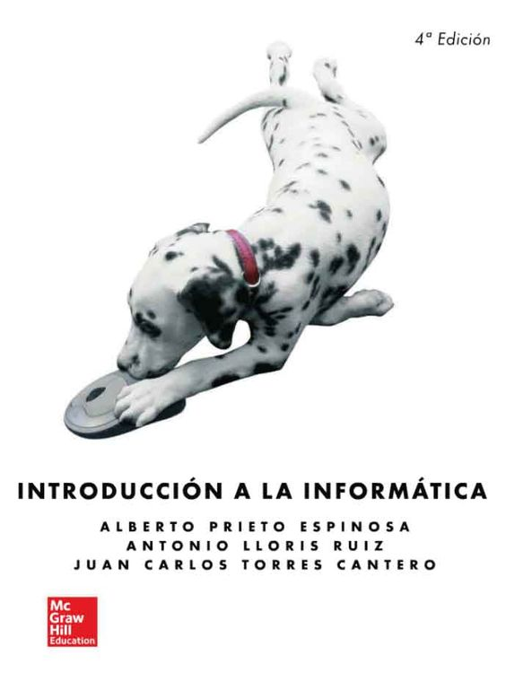
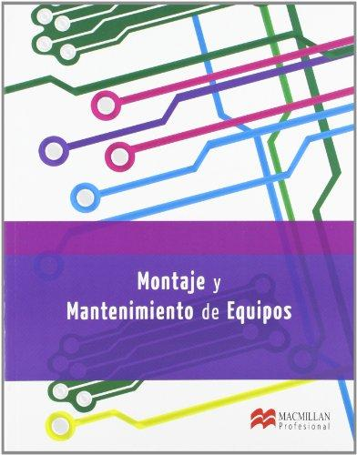
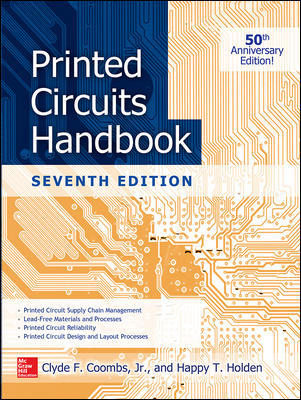
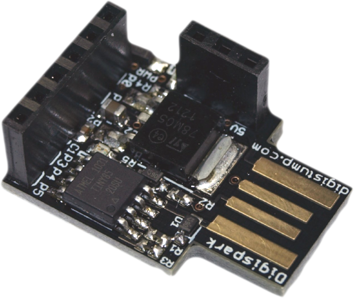

PARA COMENZAR...
Created by edme88 & rmarku
¿Quienes son de Computación?
¿Quienes son de Electrónica?
¿Quienes son de Sistemas?
¿Conocen sobre el Hardware de su computadora?
¿Qué es lo que esperan de esta materia?

LABORATORIO DE COMPUTACIÓN I
La Materia
Profesores
Ing. Martín Marcucci

mmarcucci@ing.ucc.edu.ar
Libro:

“Introducción a la informática” cuarta edición
de Prieto Espinosa y Otros
- McGraw-Hill España -
(Capítulo N°12: Estructura y Arquitectura de Computadores)
Libro:

“Montaje y mantenimiento de equipos”
por Martínez Bolinches, Salvador
- Macmillan Iberia, S.A. -
Libro:

“Printed Circuits Handbook” 7 edition
by Clyde Coombs
- McGraw-Hill Education -
UNIDADES
Unidad 1: Elementos Constitutivos de un sistema computador
Unidad 2: Tipos de Memorias
Unidad 3: Periféricos
Unidad 4: Hardware
Unidad 5: Diseño de Circuitos Impresos
Unidad 1: Elementos Constitutivos de un sistema computador
- Evolución de las computadoras personales.
- Microprocesador, placa madre, memoria, fuente, etc
- Dispositivos de entrada, dispositivos de salidas
- Placa de video
- Buses de conexión: PCI, PCI-express
Unidad 2: Tipos de Memoria
- RAM (DDR1 2 y 3, SIMM, DIMM)
- ROM, PROM, EPROM, EEPROM, FLASH
- Medios de almacenamiento: Discos rígidos, Discos Ópticos.
- Conecciones: SATA, IDE, SCSI, SAS
Unidad 3: Periféricos
- Dispositivos de entrada: Teclado, ratón, joystick, touchpad, tableta digitalizadora.
- Dispositivos de salida: Monitor, impresora, sonido.
- Otros dispositivos: placas de red, placas sintonizadoras, scanners, webcams.
- Comunicación con Periféricos y dispositivos externos: Serie, Paralelo, PS/2, USB, Ethernet, VGA, HDMI, thunderbolt.
Unidad 4: Hardware
- Conceptos de señales analógicas y digitales.
- Interfaces con el mundo real: conversores AD / DA.
- Circuitos Esquemáticos.
- Componentes Electrónicos
- Programación de periféricos. Interconexión de Periféricos
Unidad 5: Diseño de Circuitos impresos
- Herramientas EDA.
- Diseño de circuitos impresos.
- Fabricación de circuitos impresos.
- Materiales de construcción.
- Creación de un periférico para PC.
Calendario
| Semana | Unidad | Tema |
|---|---|---|
| 1 | 1 | Elementos Constitutivos de un sistema computador |
| 2 | 1 | Buses de Conexión, potencia consumida |
| 3 | 2 | Tipos de Memorias |
| 4 | 2 y 3 | Tipos de Memorias y Periféricos de entrada |
| 5 | 3 | Periféricos de Salida |
| 6 | 4 | 1er PARCIAL |
| 7 | 4 | Esquemáticos e interconexión de periféricos |
| 8 | 4 | Conceptos de Hardware, proyecto |
| 9 | 4 | Señales Analógicas y Digitales, Interfaces con el mundo real: AD / DA |
| 10 | 5 | Herramientas EDA y Diseño de Circuitos impresos |
| 11 | 5 | Fabricación de Impresos y Materiales |
| 12 | 5 | Fabricación de Impresos y Materiales |
| 13 | 5 | Creación de un periférico para PC |
| 14 | 3 | Programación de periféricos |
Primer Parcial:
- 50% Teórico, preguntas de la guía
- 50% Exposición grupal
Segundo Parcial:
Entrega Proyecto
Final
- Entrega del proyecto Terminado
- Preguntas de la guía
Exposición oral
- Exposición grupal de 20min
- Grupo de a 2 (Justificadísima excepción de a 3)
- Temas a elegir (en el aula virtual)